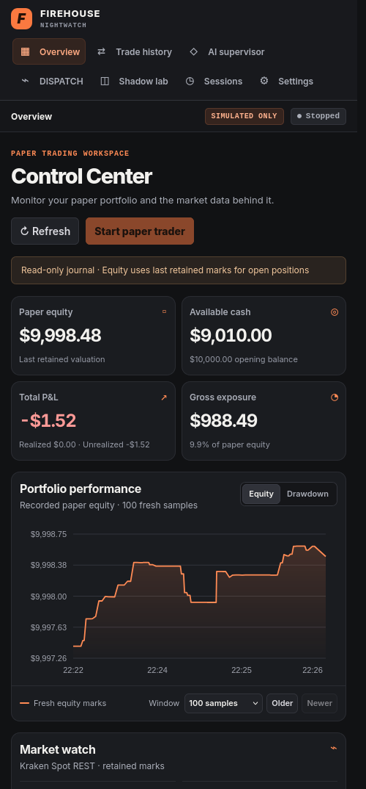

Regression tests passing
INDEPENDENT SOFTWARE ENGINEERING PROJECT
Built to test.
Engineered to verify.
A local-first trading research platform combining deterministic historical simulation, risk engineering, and experimental AI intelligence.
V7.1 · ARCHIVIST · NIGHTWATCH
In Development
Paper Trading Only
FIREHOUSE V0.3
VERIFIED ENGINEERING
Measured progress. Not promises.
Verified historical simulation, risk engineering, and immutable research evidence safeguards on a ThinkPad T480s.
Historical compatibility matches
Identical deterministic runs
Historical candles per second
Historical replay benchmarks verified November 9, 2026. Full regression suite: 469/469 passing November 14, 2026. Engine checkpoint: 8c2cd3a. These results do not demonstrate investment profitability or live-trading readiness.
ABOUT THE PROJECT
Local-first by design.
Firehouse Trading Studio is being developed as a modular research environment for testing strategies, evaluating risk controls, and studying market intelligence.
The current V7.1 engine uses deterministic rules rather than trained AI model weights. Earlier experimental components explore local language-model inference.
01
Historical simulationReproducible, event-driven paper replay
02
Risk engineeringExposure limits, protective exits, and emergency simulation
03
Offline-first researchLocal Linux development and testing
04
Modular architectureIndependent components with measurable behavior
INSIDE THE ENGINE
Firehouse in Action
Explore a real Firehouse simulation using synthetic market data.
BTC-USD Market Replay
Synthetic data · Rules-only paper trading

Synthetic market data only. No live trading or actual investment performance represented.
MISSION 08 · NIGHTWATCH
Mission control. Wherever you are.
Nightwatch brings Firehouse monitoring, historical research, and operational visibility into a responsive browser interface.

Nightwatch Control Center
Monitor engine status and inspect operational information through a local-first dashboard.

Mobile Command
Responsive Android access through a browser or PWA, connected securely to the Python backend over SSH.

Historical Lab
Inspect historical simulations and research evidence without confusing paper results with live performance.
DEVELOPMENT HISTORY
From prototype to verified engine.
v0.5 — Research baseline
Historical paper replay, local AI experiments, diagnostics, and strategy benchmarks.
v0.6 — AI experimentation
Past-only indicator snapshots, structured responses, and Ollama advisory modes.
V7 — Deterministic scheduling
Rule-based historical strategy scheduling and experimental regime selection.
V7.1 — Safety and verification
Regression-tested emergency handling, gap protection, exposure limits, and multi-symbol accounting.
ARCHIVIST V0.3 — Evidence integrity
Immutable evidence publication, descriptor-anchored verification, symlink protection, and recovery assessment. Full repository regression suite: 469 passing tests.
Nightwatch and Historical Lab
Responsive control center, historical research interface, PWA assets, and Android SSH access. Selected Nightwatch regression suites: 59 passed, 3 skipped.
WHAT COMES NEXT
The development roadmap.
ARCHIVIST Recovery
Recovery consistency, filesystem fault-injection testing, and verification under failure conditions.
Cross-platform Nightwatch
Expand compatibility testing, improve mobile access, and verify the portable Termux launcher.
Model development
Investigate language-model training and fine-tuning after establishing reliable deterministic baselines.

Still building. Still testing.
Firehouse Trading Studio is an independent research project. Updates will follow major verified milestones.
Back to top ↑